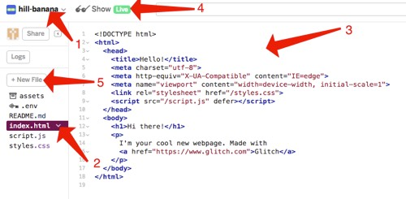

Glitch Introduction
One of our goals for this class is to allow you to create a real website accessible with a browser. This, as you will discover in the readings and videos for this week, requires you to have what is known as a host. Most hosts cost money, but not all. For this class, we will be using a free service called Glitch.com. Using this service allows you to create your website with their text editor, save the website, upload images for the website, and even share the website with an instructor or fellow student for collaboration.
-
Glitch Login
Wait:
Do not start this activity unless you have completed the W01 Assignment: Accounts and Software setup in Canvas. You need a Glitch account before you can continue.
Visit the Glitch website and click on the Sign in button in the top right corner of the screen. Glitch lets you sign in using either Facebook, Google, email, or GitHub; all are free to use. GitHub might be the easiest option to use. Click on the Sign in button for the account you would like to use. You may see a screen requesting permission for Glitch to access the account you have chosen to use.
In the past the spam filter for BYUI blocked the registration emails for Glitch. This issue should be fixed now but if you register with the email option using your student email and never receive the verification email, please try again with another email or a different registration option.
-
Remix (copy) the Starter Project
Next we need to create a project for you to use this semester. Glitch gives you the ability to use an existing project as a starting point. After logging in to Glitch, visit this project and click on the Remix to Edit button on the screen. This will create a copy of the project that you own and can edit.
-
Become Familiar with the Glitch Interface
After creating a project you should see something similar to the following: 
- This is the random name that Glitch chose for your project. You can change this by clicking on the name. You will also find settings that effect the editor (changing theme, wrap text, etc) in here. Checking the "Wrap Text" box is recommended.
-
This is the list of files in the project. Notice that
index.htmlis selected and open in the editor. TheREADME.mdfile contains information about the different files in the project. Click on the filename to open it in the editor and spend a few minutes reading through that. - This is the code editor. It is where we will spend most of our time writing HTML and CSS
- This is where you will click to preview your page. It will either open a new tab or a new pane next to the editor where you can see the results of the code you write.
- This is where you can add a new file to your project.
Make sure to click on and read the
README.mdpage. -
Your First Edits: index.html
With your remixed (copied) project open in Glitch, click on the
index.htmlfile. Please make the following changes to this file in Glitch's editor:-
Add a Sentence
Remove
[SENTENCE]and replace it with your own sentence or two. For example your could add something like: This is the first edit I ever made to my Glitch website. I added this simple sentence. -
Correct the Year
Replace
[YEAR]with the current year. -
Add your Name
Replace
[NAME]with your first and last name. -
Update the Logo
In the index.html file you should see a line of code simiar to the following:
<div class="logo-box"> <img src="https://via.placeholder.com/300x200"> </div>To change the logo being shown on the page you need to update the images source attribute. The source attribute
src="..."tells your web browser where to load (source) the image from by providing a URL to it. Please do a Google Search for any appropriate picture you like, copy it's source (URL), and replace it in Glitch. For example here is an updated logo with a new source that points to a picture of puppies instead:<img src="https://dogtime.com/assets/uploads/2011/03/puppy-development.jpg">If you need help finding and using the source of an image on the internet the following video can help:
How to get a URL of an image on Google
-
-
Your First Edits: styles.css
Style sheets, or CSS files, are what adds styles to your page. To demonstrate how this works please make the following adjustments to the
styles.cssfile:-
Wider Logo
Change the width of the logo image to
350pxwide. Here is what the original code looks like; this is where you need to change 200px to 350px:.logo-box img { width: 200px; height: auto; } -
Bigger Navigation Text
Change the size of the navigation text to
30pxand add the following rule to the navigation rule set:text-transform: uppercase;Here is what the original code looks like; this is where you need to change 18px to 30px and add the provided code:header nav ul li { display: inline-block; padding: 15px; font-size: 18px; }
-
-
Complete Assignment
Follow the instructions in canvas to prove you have completed this assignment. To get the URL to your live Glitch site click on
Showin the upper left and thenNew Window. When the new tab loads with your live site copy the URL from the address bar.Grading:
Before your second class this week you will need to submit the URL to your live Glitch page in Canvas as proof of completing this assignment. Do not submit the URL to your Glitch profile or your Glitch editor, it must be the URL to your live site.